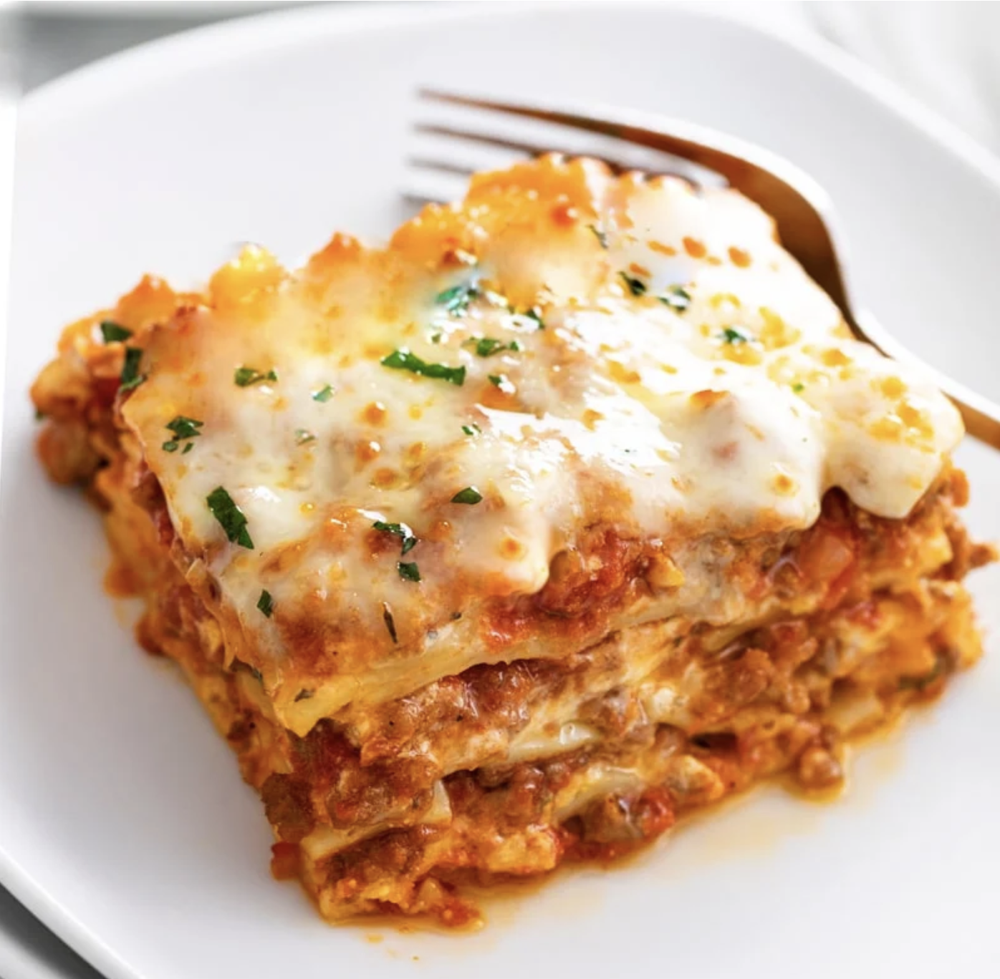

Easy Lasagna Recipe

Description
This lasagna recipe is easy to make with a creamy ricotta cheese mixture,
savory meat sauce, and mozzarella cheese. BONUS: you can make-ahead and it
is freezer-friendly!
Ingredients
Cheese filling
- 15 oz. ricotta cheese, 2 cups
- 1 large egg
- 2 cups mozzarella cheese
- 3/4 cup parmesan cheese, freshly grated
- 2 teaspoons italian seasoning
- 1/2 teaspoon salt
- 1/4 teaspoon pepper
Meat Sauce
- 1 tablespoon olive oil
- 1 yellow onion, finely diced
- 3/4 lb. ground beef
- 3/4 lb. ground italian sausage
- 3 cloves garlic, minced
- 1/2 cup chicken broth
- 40 oz. marinara sauce
- 1 tablespoon tomato paste
- 1 teaspoon hot sauce
- 1 teaspoon Worcestershire sauce
Lasagna Noodles/Cheese Topping
- 12 lasagna noodles, plus extra in case of breakage
- 2.5 cups mozzarella cheese
Steps
-
Combine the cheese filling ingredients in a medium bowl and set aside.
Measure out remaining ingredients.
-
Heat olive oil over medium heat and add the diced onions. Let them
soften for 10 minutes. (This allows them to release a little sugar which
is a nice offset to the acidity of the tomatoes.)
-
Add the ground beef and sausage and increase heat to medium-high. Use a
spatula to break up the meat so that it’s very fine and crumbled. Cook
for 8-10 minutes, or until cooked through. Add garlic during the last
minute. Drain excess grease.
-
Add the chicken broth and use a silicone spatula to “clean” the bottom
and sides of the pot. Add the marinara sauce, tomato paste, hot sauce,
and Worcestershire sauce. Bring to a boil, then reduce to a simmer.
Cover partially and let the sauce simmer gently while you boil the pasta
noodles.
- Preheat oven to 375°.
-
Begin boiling a large pot of salted pasta water for the lasagna noodles.
Once a rapid boil is reached, cook the noodles to al dente according to
package instructions. (Set a timer to ensure you don’t overcook them.)
Gently stir with a wooden spoon throughout cooking to prevent the
noodles from sticking. Drain and rinse with cold water until noodles are
completely cool.
-
Lay the cooled noodles flat on wax or parchment paper while you begin
assembling the lasagna.
-
Spread 1 heaping cup of meat sauce on the bottom of a 9 x 13-inch
casserole dish. Next, add 4 lasagna noodles, overlapping them if needed.
-
Spread 1/3 of the ricotta cheese mixture over the noodles, followed by
about 1 ½ cups of meat sauce.
-
Top with 4 more lasagna noodles, 1/3 of the ricotta cheese mixture, 1 ½
cups meat sauce.
-
Finish with 4 more lasagna noodles, the rest of the ricotta mixture, and
the rest of the meat sauce.
- Top with 2 ½ cups of Mozzarella cheese.
-
Spray foil with nonstick cooking spray and place it spray-side-down on
top of the baking dish to prevent the cheese from sticking to it.
-
Bake for 35 minutes. Remove cover and bake for
10 more minutes.
-
Remove and garnish with fresh parsley. Let it sit for 15 minutes prior
to serving to allow the layers to set.
Home